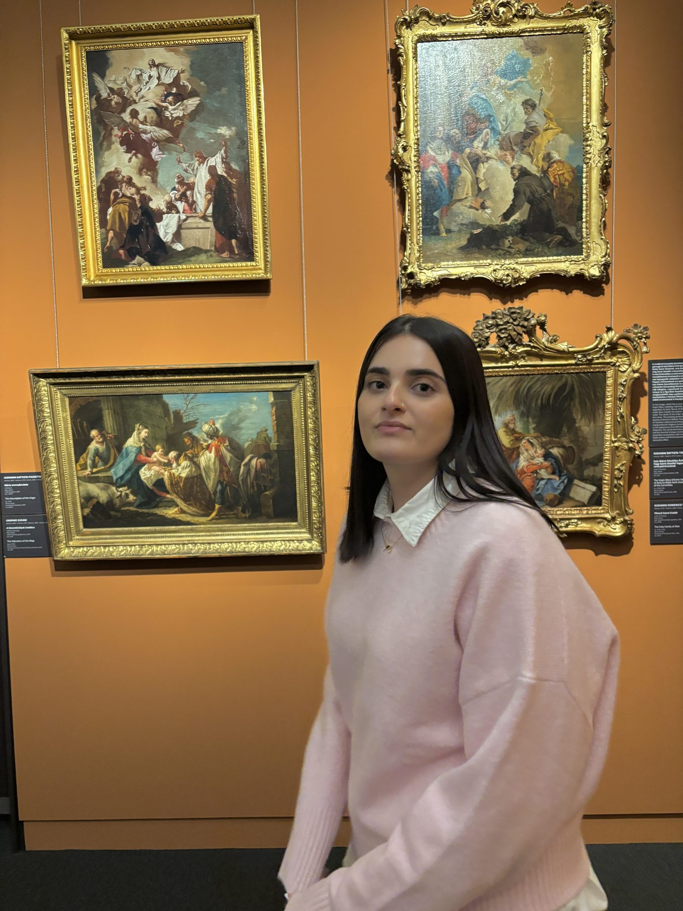

About

My name is Aviv, a third-year Visual Communication student at Bezalel Academy. With a lifelong foundation in art and illustration, I’ve developed a keen eye for visual language – now channeling that creative background into Product Design to transform passion into functional, impactful digital experiences.